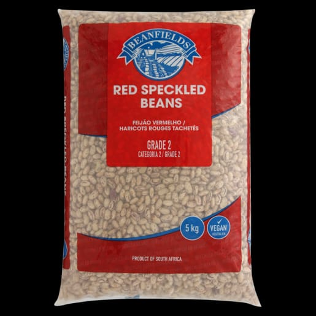

Product C

Beans are a type of legume that are widely consumed globally. They're a great source of protein, fiber, and various essential nutrients. Beans come in different varieties, such as kidney beans, black beans, chickpeas, and more. They're versatile and can be used in a range of dishes, from soups and stews to salads and main courses. Beans are known for their potential health benefits, including supporting heart health and providing sustained energy. They're also a good option for vegetarians and vegans due to their high protein content.
- Origin: SA Farmer
- Price: R90
- Key Benefits
-
- High in Protein: Excellent source of plant-based protein.
- Rich in Fiber: Supports digestive health and satiety.
- Good for Heart Health: Helps lower cholesterol and blood pressure.
- Packed with Nutrients: Rich in vitamins, minerals, and antioxidants.
- Supports Healthy Weight: Fills you up and provides sustained energy.
- May Help Manage Blood Sugar: Supports stable blood sugar levels.
Overall, beans are a nutritious and versatile food that can be a great addition to a healthy diet!